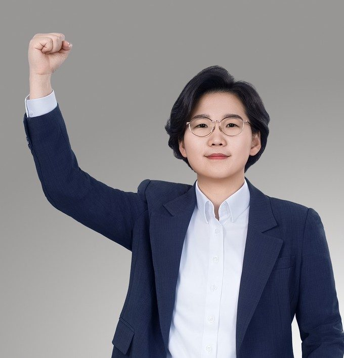

PROFILE
김보미를 소개합니다
정치활동 13년, 의정활동 8년 — “지방에서 시작된 변화가 대한민국을 바꾼다”를 기록으로 증명해 왔습니다.

김보미
스물셋에 “내 고장 강진에서부터 대한민국을 바꿔보겠다”며 입당했습니다. 스물여덟에 지역 최초의 청년 군의원이 되었고, 서른둘에 전국에서 가장 어린 기초의회 의장이 되었습니다. 지금은 243개 지방정부의 살림을 시민이 직접 들여다보는 도구를 만들고 있습니다.
- 현
- 전남대학교 총동창회 부회장
- 현
- 더불어민주당 참좋은지방정부위원회 상임위원
- 현
- 더불어민주당 청년정책연구소 부소장
- 현
- 재정주권시민행동 공동대표
- 전
- 제9대 강진군의회 의장(전반기) · 전국 최연소 기초의회 의장
- 전
- 제8·9대 전라남도 강진군의회 의원
- 전
- 더민주전국혁신회의 상임대표 · 더민주청년혁신회의 상임대표
- 전
- (사)한국청년문화예술인협회 창립회장
- 전
- 더불어민주당 당대표 예비후보(2026 전당대회)
- 졸
- 강진고등학교(26회) 졸업
- 졸
- 전남대학교 졸업 · 일반대학원 석사 수료
JOURNEY
걸어온 길
첫걸음부터 오늘까지, 해마다의 기록.
더불어민주당 입당
‘내 고장 강진에서부터 대한민국을 바꿔보겠다’는 꿈으로 내디딘 변화와 혁신의 첫걸음.
지역 최초의 청년 군의원
4개 군 총합 최다득표로 더불어민주당 비례대표 1순위 당선. 강진군의회 역대 최연소이자 지역 최초의 20대 여성·청년 의원.
전국 최연소 기초의회 의장
가·나 선거구를 통틀어 최다득표로 재선, 전국 최연소 의장으로 선출. 업무추진비 전면 공개, 역대 최대 규모 낭비예산 삭감, 사상 최초 ‘일문일답’ 군정질문을 도입했습니다.
굽히지 않은 시간
세 번째 정밀심사 표적, 여론조사 후보 이름 배제, 100여 건의 허위·비방 보도. 그러나 표적 고소·감사·수사는 전 건 ‘혐의없음·불송치’로 종결됐고, 허위보도 손해배상 소송에서도 승소(2024)했습니다.
청년 정치 플랫폼 구축
더민주전국혁신회의 상임대표로 ‘더민주청년혁신회의’ 출범. 지역과 중앙을 잇는 청년 정치 플랫폼을 설계·운영했습니다.
강진군수 도전
제9회 지방선거 기초단체장 당내 경선에 도전했습니다. 화환 대신 3,000원 공약집으로 채운 개소식 — 문제 제기를 넘어 문제 해결의 주체로 나섰습니다. 경선 결과는 겸허히 받아들이고, 당 후보들의 본선 승리를 도왔습니다.
당대표 예비경선 완주
겨우 4일의 선거운동으로 예비경선을 완주했습니다. 본경선에는 오르지 못했지만, 최고위원회 해체·컷오프 득표 결과 공개·청년최고위원제 도입을 요구하는 서명운동은 계속됩니다. 기록관에서 원문 보기 →
세금의 주인을 국민에게
재정주권시민행동 공동대표로, 243개 지방정부의 예산·집행·계약을 누구나 3초에 확인하는 「우리동네365」를 직접 만들고 있습니다. 감시는 촘촘하게, 공개는 넓게.
ACHIEVEMENT
주요 의정 성과 — 변화와 혁신의 자치분권 2.0
8년의 의정활동, 데이터와 결과가 실력을 말해줍니다. ※ 제8·9대 전라남도 강진군의회 의원 · 제9대 전반기 의장 재임 중.
열린 의회
- 제8대 4년치 언론 노출(약 970건)을 제9대 단 1년 만에 돌파
- 업무추진비 사용내역 정보공개 게시판 상시 전면 공개
- 유튜브로 본회의·행정사무감사 실시간 생중계
- 페이스북·인스타그램·블로그 신규 개설 — 조례·의사일정·입법예고를 카드뉴스로 전달
일하는 의회
- 개원 이래 최초 ‘일문일답 군정질문’ 도입 — 집행부 정책 실시간 검증
- 역대 최대 규모 낭비성 예산 108억원 삭감 (2023 본예산 4,790억의 2.25%)
- 역대 최다 행정사무감사 시정요구 195건
- 조례 165건 제·개정(제8대 전반기 대비 +44%) · 대표발의 24건 · 조례정비특위 운영
체감형 복지
- 전남 최초·전국 최고 수준 강진형 육아양육수당 — 소득·자녀수 무관, 자녀 1명당 만 7세까지 월 60만원(아동 1인 최대 5,040만원)
- 시행 후 출생아·전입 인구 증가 + 전액 지역화폐 지급으로 골목경제 활성화
- 8년 연속 12월 의정활동비 전액 지역아동센터 기탁
- 육아양육수당 지원 조례 대표 발의
숙원 해결
- 강진~마량 4차선 확·포장, 강진만 패류 보상금 신속 지급, 월출산 생태탐방원 유치, 호남고속철 강진 구간 연장 등 대정부 건의
- 군의원–도의원–국회의원 ‘원팀’ 공조체계 구축
- ‘도군도군 신강진 공부 모임’ 정례 추진 — 현안 공유·공동 전략 마련
- 시민 재정감시 플랫폼 ‘나라살림 돋보기’·‘우리동네365’ 구축
PHOTOS
365일, 함께한 순간들
사진 위에 마우스를 올리면 멈추고, 누르면 크게 볼 수 있습니다.